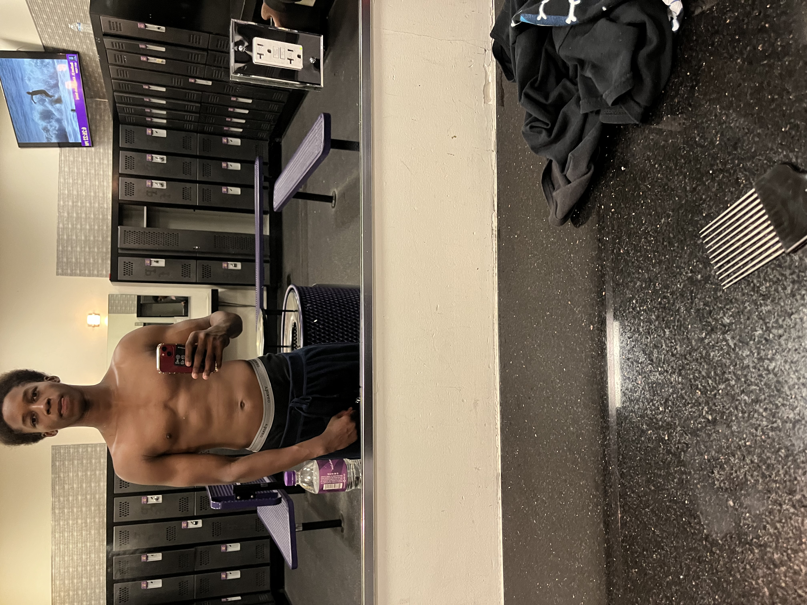
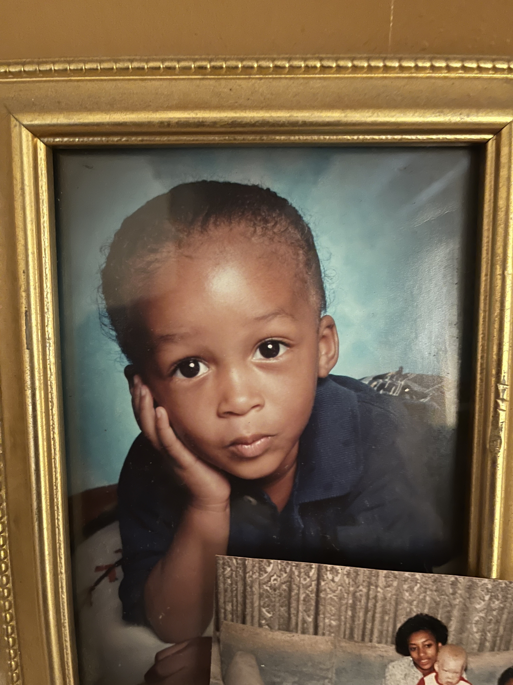

|

I go to the gym to improve my physical fitness, boost my overall health, and maintain an active lifestyle. Additionally, the gym provides a supportive environment for achieving your fitness goals and helps relieve stress and promote mental well-being. |

I put my baby picture because I liked my long hair and it allowed me to experiment with various hairstyles, giving me a sense of versatility and self-expression. Moreover, my long hair made me feel more confident and enhances my personal style, contributing to a unique and distinct appearance that I enjoyed. |
I like going out because it allows me to explore new places and experience different environments, which invigorates my sense of adventure. Additionally, socializing with friends and meeting new people during outings brings joy and a sense of connection to my life. |